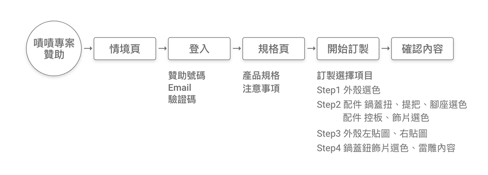
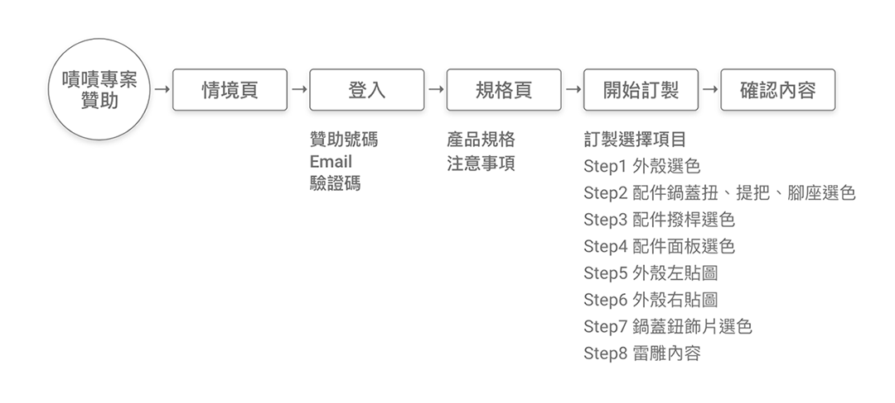

台灣市場首創使用者能自行訂製外觀的電鍋！開創自行參與家電產品設計之先河，讓購買電鍋不單只是選擇現有成品，而是參與設計製作，讓購買之電鍋，成為獨一無二的個人專屬家電。
在基本的型號搭配不同顏色的外殼+水標圖樣、選擇不同的配件、電鍋蓋飾片，訂製出專屬自己風格的電鍋。
操作流程、線框稿、易用性測試、視覺設計、網頁前端
在初步規劃時，原只有訂製流程，但評估加入情境頁，讓使用者可同時想像適合自己的產品，在設計時更能激發靈感，並另加上規格及注意事項，提升產品的完整度。
易用性測試中發現，若同時選擇多項訂製選擇，使用者容易忽略同時要完成的項目，將4個步驟拆成8個步驟，反倒提升操作效率及完成度。
| 產品項目 | 61種，球鞋 |
| 訂制選項 | 12種以上 每個區域的選色、材質、鞋底的挑選、 及個人化的設計-鞋跟logo選色或自訂文字 |
| 呈現方式 | 3D，Step by Step 簡潔，以強調商品本身為主 |
| 流程 | 選擇款式→開始訂製→確認設計 |
| 其他 |
- 不需先登入，即可操作 - 未完成的選項，初次選擇完成後，循環再出現 - 隨時可查看已選擇項目 - 可跳過步驟，操作完成可觀看設計。 |
| 產品項目 | - 手機殼：各型號各有4類產品 - 固架(2種規格、2類產品) |
| 訂制選項 |
照片拼貼、個性文字、紀念數字、聯名系列 - 可自行上傳圖片、設定尺寸及背景 - 輸入文字：預設7種模版及使用者可調整 - 聯名系列+文字 |
| 呈現方式 | 平面、Step by Step 簡潔，以強調商品本身為主 |
| 流程 | 選擇款式→訂製項目→確認設計→注意事項提醒 |
| 其他 | - 不需登入，即可操作 - 訂製的項目皆在同一頁 |
| 第一階段 2020.10~12月 | 流程規劃 | 1W |
| 線框稿 | 1W | |
| 視覺設計 | 2W | |
| 網頁製作 (桌機+手機) | 2W | |
| 測試 (測試區+正式區) | 2W | |
| 後台製作 | 2-3W | |
| 第二階段 | 增加訂製主題 | 2W |
| 第三階段 | 增加登入及後台相關功能 | 3W |